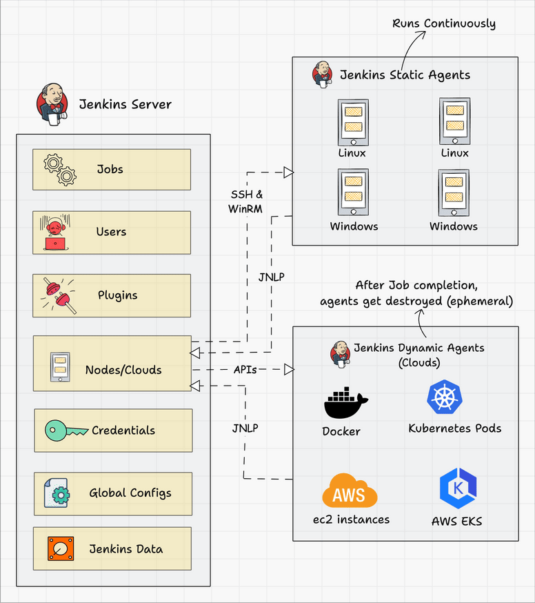

A Git push, webhook, timer, or manual run starts the job.
Day 11 of 100
Jenkins architecture: controller, agents, jobs, and pipelines
Day 11 explains what happens behind the Jenkinsfile. You will see how the Jenkins controller schedules work, how agents run builds, how credentials and plugins support delivery, and why scalable CI/CD depends on separating orchestration from execution.
The controller decides which agent should run the work.
The agent checks out code, builds, tests, scans, and packages.
Jenkins stores logs, artifacts, status, and notifications.
Visual architecture
How Jenkins is arranged in a real CI/CD environment
The Jenkins controller is the coordination layer. It holds jobs, users, plugins, credentials, global configuration, node definitions, and build history. The agents are the execution layer. They do the heavy work: build code, run tests, create Docker images, scan packages, publish artifacts, and deploy.

The brain of Jenkins
The controller manages scheduling, job configuration, plugins, credentials, users, global settings, nodes, build metadata, logs, and pipeline orchestration. It should coordinate work, not carry every heavy build.
The workers of Jenkins
Agents run the actual stages. They can be Linux servers, Windows servers, Docker containers, Kubernetes pods, EC2 instances, or other cloud workers. Good agent design improves speed, reliability, and security.
Controller responsibilities
What the Jenkins controller normally manages
Freestyle jobs, multibranch pipelines, folders, and build configuration.
Authentication, authorization, roles, permissions, and audit-friendly access.
Git, Docker, Kubernetes, credentials, notifications, security, and integrations.
Static agents, dynamic cloud agents, labels, executors, and connection methods.
Tokens, SSH keys, cloud credentials, registry passwords, and secret binding.
Console logs, test results, artifacts, job status, and deployment evidence.
Agent strategy
Static agents vs dynamic agents
Always available
Static agents are long-running machines connected to Jenkins. They are useful for stable build environments, special operating systems, heavy tools, or workloads that need predictable capacity.
- Good for fixed Linux or Windows build nodes
- Can hold pre-installed build tools
- Need patching, cleanup, and capacity management
Created on demand
Dynamic agents are created when a job starts and removed when the job ends. They are common with Docker, Kubernetes, AWS EC2, and EKS because they reduce waste and keep build environments clean.
- Good for scalable CI/CD workloads
- Cleaner because each build can start fresh
- Need reliable templates, images, and cloud permissions
Pipeline example
A simple Jenkinsfile that uses agents properly
This example keeps the controller as the scheduler and runs the actual work on an agent. In a real setup, the agent label could point to a Linux build node, Docker worker, Kubernetes pod template, or cloud agent.
pipeline {
agent { label 'linux-build-agent' }
options {
timestamps()
buildDiscarder(logRotator(numToKeepStr: '20'))
}
stages {
stage('Checkout') {
steps {
git branch: 'main', url: 'https://github.com/tek-giant/app.git'
}
}
stage('Test') {
steps {
sh 'npm ci'
sh 'npm test'
}
}
stage('Build Docker Image') {
steps {
sh 'docker build -t app:${BUILD_NUMBER} .'
}
}
}
}Credentials
How Jenkins should handle secrets
Secrets should not be written directly in Jenkinsfiles, console logs, repositories, or shell scripts. Jenkins credentials allow a pipeline to use sensitive values without exposing them as plain text.
stage('Push Image') {
steps {
withCredentials([usernamePassword(
credentialsId: 'dockerhub-creds',
usernameVariable: 'DOCKER_USER',
passwordVariable: 'DOCKER_PASS'
)]) {
sh 'echo "$DOCKER_PASS" | docker login -u "$DOCKER_USER" --password-stdin'
sh 'docker push tekgiant/app:${BUILD_NUMBER}'
}
}
}credentialsIdReferences a secret stored in Jenkins, not in source code.
withCredentialsInjects the secret only around the steps that need it.
masked outputHelps prevent sensitive values from appearing in console logs.
least privilegeEach credential should only have the access required for its job.
Connections
How agents connect to the controller
Common for Linux agents. Jenkins connects to the machine and starts the agent process.
Useful for Windows environments where builds need Microsoft tooling.
The agent connects back to Jenkins, often useful when inbound access to agents is restricted.
Cloud plugins create or remove agents through Docker, Kubernetes, AWS, or other provider APIs.
Troubleshooting
When a Jenkins pipeline fails, check the architecture too
Is Jenkins healthy? Check disk space, queue length, plugins, restart history, and system logs.
Is the node online? Check labels, executors, workspace permissions, installed tools, and connectivity.
Did a token expire? Check credential IDs, scopes, registry access, SSH keys, and cloud permissions.
Can Jenkins clone the source? Check branch name, webhook trigger, Git credentials, and network access.
Are dependencies available? Check package manager errors, versions, caches, and environment variables.
Did the pipeline reach Kubernetes, Docker registry, AWS, or the target server correctly?
Hands-on checks
Commands and places to inspect
Manage Jenkins -> Nodes
Build Executor Status
Console Output
Workspace
Credentials
Pipeline Syntax
System Log
Plugin Manager
Production thinking
What good Jenkins architecture gives a DevOps team
Agents can be added, removed, or created on demand as workload grows.
Builds are less likely to overload the controller or block unrelated teams.
Secrets, permissions, and build environments can be controlled more carefully.
Teams can use standard build images, labels, tool versions, and shared libraries.
Dynamic cloud agents can exist only while work is running.
Failures become easier to isolate: controller, agent, code, dependency, or target environment.
Readiness check
What readers should be able to explain after Day 11
trigger
controller
queue
agent
workspace
credentials
artifact
logs
Why should heavy builds run on agents instead of the controller?
When would you choose a static agent instead of a dynamic Kubernetes pod?
How would you troubleshoot an offline Jenkins agent?
How should Jenkins use Docker registry credentials securely?